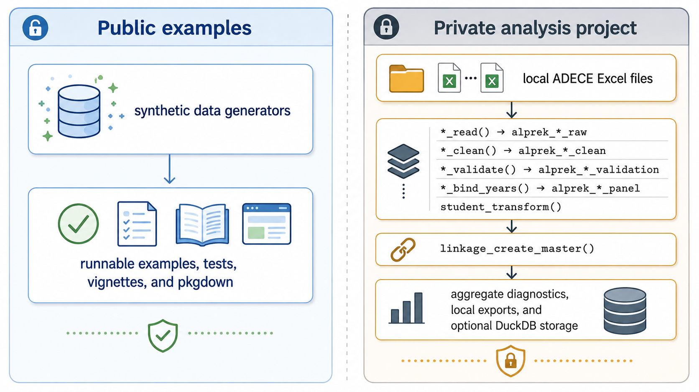

ALprekDB turns Alabama First Class Pre-K administrative files into validated, analysis-ready panel datasets while keeping raw data out of public code.
ALprekDB is a modular R package for ADECE budget, classroom, and student records. It handles file-format detection, data-driven codebooks, validation diagnostics, derived student variables, cross-module linkage, DuckDB storage, and export helpers. Public examples use fully synthetic data. Real ADECE data workflows are opt-in, local-only, and designed for private analysis projects.
Author
JoonHo Lee, Ph.D.
Assistant Professor, The University of Alabama
jlee296@ua.edu
Why ALprekDB?
ALprekDB is built for repeatable Pre-K administrative data work:
- standardize annual ADECE Excel files across changing source formats;
- build longitudinal budget, classroom, and student panels;
- create classroom- and student-level linked master datasets;
- record validation, linkage, orphan, and coverage diagnostics;
- support SQL-friendly DuckDB outputs for downstream analysis;
- separate public package documentation from private real-data processing.
Data Coverage in v0.7.0
The v0.7.0 real-data manifest uses asymmetric coverage because the currently available source set spans different ranges per module.
| Module | Covered school years | Current release notes |
|---|---|---|
| Budget | 2021-22 through 2024-25 | The 2025-26 budget is structurally unavailable and is not inferred, zero-filled, or copied from another source. |
| Classroom | 2021-22 through 2025-26 | Classroom-code validation uses six-digit program codes. |
| Student | 2021-22 through 2025-26 | Student PII is excluded by default in private workflows. |
| Applications (new in v0.7.0) | Cycle-1 (2026-2027) | Reads renewals / new / non-renewals / capacity sheets from the ADECE annual workbook. Out-of-scope this release: geocoding, ACS integration, Bayesian tier estimation — those are planned as separate downstream packages. |
Aggregate real-data smoke tests currently cover 5,867 budget classroom-year records, 7,409 classroom-year records, 116,689 student-year records, and 1,617 cycle-1 application rows (1,495 renewals + 122 new) plus 819 site-level capacity rows. These are aggregate processing counts, not row-level data.
Quick Start: Synthetic Data
Synthetic examples require no ADECE files and are safe for public documentation, CI checks, teaching, and package development. They use fake 9xx classroom-code prefixes and synthetic county labels so printed examples cannot be mistaken for confidential ADECE records.
library(ALprekDB)
budget <- alprek_synthetic_budget(
n_classrooms = 20,
n_years = 2,
seed = 42
)
classroom <- alprek_synthetic_classroom(
n_classrooms = 20,
n_years = 2,
seed = 42
)
student <- alprek_synthetic_student(
n_students = 100,
n_classrooms = 20,
n_years = 2,
seed = 42
)
master <- linkage_create_master(budget, classroom, student)
linkage_validate(master)
linkage_summary_stats(master)Quick Start: Applications Module
The applications module starts from ADECE’s annual classroom-applications workbook and keeps geocoding / ACS / Bayesian tier estimation outside this package. For a private cycle-1 run, pair the applications workbook with an existing classroom panel:
path <- Sys.getenv("ALPREKDB_APPLICATIONS_FILE")
ren <- applications_clean(
applications_read_renewals(path, cycle_year = "2026-2027",
receipt_date = "2026-04-20")
)
new <- applications_clean(
applications_read_new(path, cycle_year = "2026-2027",
receipt_date = "2026-04-20")
)
cap <- applications_clean(
applications_read_capacity(path, cycle_year = "2026-2027",
receipt_date = "2026-04-20")
)
rec <- applications_reconcile(ren, new, prior_classroom_panel = classroom_panel)
applications_validate(rec)
mst <- applications_transform(rec, capacity_clean = cap)
lk <- linkage_applications_classroom(mst, classroom_panel,
target_school_year = rec$meta$prior_school_year)
applications_validate(lk)For a public synthetic walkthrough that does not require ADECE files, see vignette("a6-applications-intake", package = "ALprekDB").
Private Real-Data Workflow
Raw ADECE files are not distributed with ALprekDB and should not be committed to GitHub, included in package builds, or rendered into public pkgdown pages. For private processing, keep raw files in a local source directory such as ORIGINAL-DATA/ or another directory referenced by ALPREKDB_DATA_DIR.
The package includes a targets workflow template:
template_dir <- system.file("templates", "targets", package = "ALprekDB")
dir.create("alprekdb-private-workflow", showWarnings = FALSE)
file.copy(
list.files(template_dir, full.names = TRUE, all.files = TRUE, no.. = TRUE),
"alprekdb-private-workflow",
recursive = TRUE
)From the private workflow directory, configure paths with environment variables:
export ALPREKDB_RUN_REALDATA=1
export ALPREKDB_DATA_DIR="/path/to/local/ADECE/source/files"
export ALPREKDB_OUTPUT_DIR="output/alprekdb"Then run:
targets::tar_make()The private workflow keeps student PII out of processed student panels by default. Row-level RDS outputs and DuckDB writes require an explicit local opt-in:
Modules
| Module | Purpose | Main outputs |
|---|---|---|
| Budget | Read, clean, validate, reshape, and bind per-classroom funding records. | Long budget records and multi-year budget panels. |
| Classroom | Read, clean, validate, and bind classroom characteristics, geography, and staffing records. | Multi-year classroom panels. |
| Student | Read, clean, validate, and bind child-level enrollment, demographics, assessment, attendance, and service records. | Multi-year student panels with PII excluded by default. |
| Applications | Read, detect, clean, reconcile, validate, transform, export, and persist annual ADECE classroom applications. | Application-grain master data, capacity-grain data, reconciliation audit logs, linkage outputs, and DuckDB tables. |
| Transform | Derive analytic student measures such as gains, readiness, chronic absence, and risk indicators. | Enriched student panels. |
| Linkage | Join budget, classroom, and student panels with explicit orphan and coverage diagnostics. | Classroom-level and student-level master datasets. |
| Database | Persist panels and master datasets in DuckDB for SQL analysis. | Local DuckDB databases and query results. |
Pipeline Architecture

The diagram separates the public package surface from the private analysis workflow: public examples, tests, vignettes, and pkgdown are driven by synthetic data, while local ADECE Excel files remain opt-in inputs for private validation, linkage, aggregate diagnostics, exports, and optional DuckDB storage.
Privacy and Provenance Guardrails
- Do not commit raw ADECE files,
_targets/caches, row-level exports, local DuckDB databases, or private output folders. - Use
alprek_synthetic_budget(),alprek_synthetic_classroom(), andalprek_synthetic_student()for public examples; these generators use fake9xxclassroom-code prefixes and synthetic county labels. - Treat all real student-level outputs as confidential, even when direct PII columns are excluded.
- Keep real-data paths in environment variables rather than committed scripts.
- Report only aggregate diagnostics, validation summaries, and non-disclosive counts in public documentation.
- Preserve package version, source manifest coverage, validation summaries, and linkage diagnostics with private analytic outputs.
Classroom Code Format
Every classroom record is identified by a classroom code: CCCDNNNNNN.NN
-
CCC= county code, such as001through067; -
D= delivery type; -
NNNNNN= six-digit program code; -
NN= classroom number within site.
The example below uses fake 9xx prefixes and 9xxxxx program codes for public documentation.
parse_classroom_codes(c("901P900001.01", "967H900002.02"))Delivery type codes are defined by alprek_delivery_types():
| Code | Delivery type |
|---|---|
P |
Public School |
C |
Private Child Care |
H |
Head Start |
O |
Community Organization |
F |
Faith-Based Organization |
U |
University Operated |
S |
Private School |
Known Limitations
- ALprekDB does not distribute or expose raw ADECE row-level records.
- Synthetic data are fabricated for demonstration and testing; they should not be interpreted as Alabama program estimates.
- The 2025-26 budget file is not available in the current source scope, so 2025-26 classroom and student records are retained with explicit missing budget coverage.
- Validation checks are advisory diagnostics, not a substitute for substantive review of analysis choices.
- Bucket D applications are retained without
matched_classroom_code/matched_site_codeso downstream geocoding packages can resolve them from organization, project, and county fields. - Real-data processing depends on local file access and the canonical source manifest; paths and outputs should remain outside public repositories.